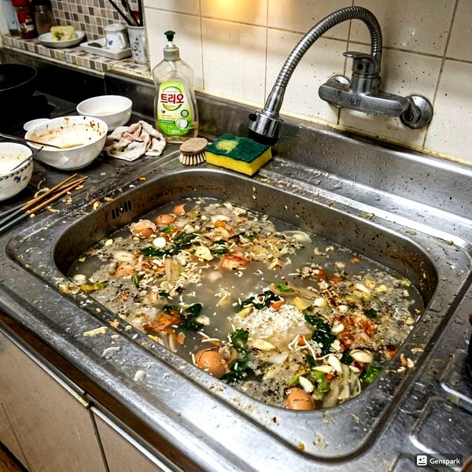
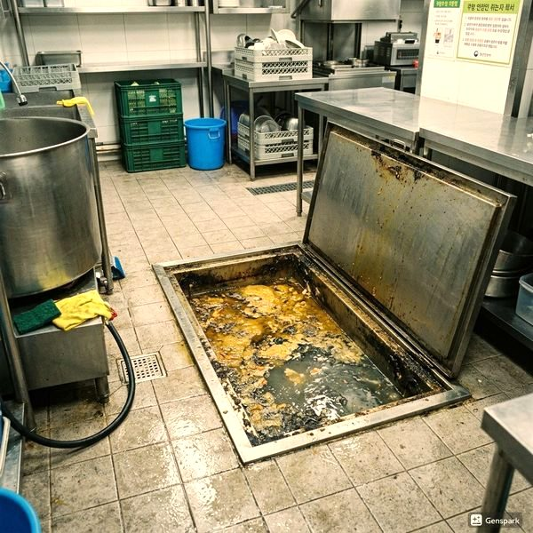
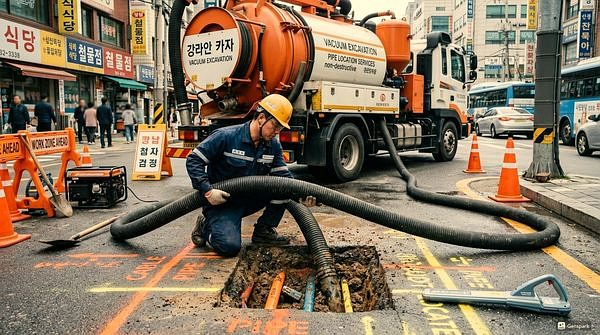

아파트 하수구 역류 원인과 대처법 - 층간 문제 해결
2026년 4월 12일 | 제우스시설관리

아파트에서 하수구가 역류하면 오수가 화장실이나 싱크대로 올라오는 최악의 상황이 발생합니다. 특히 저층 세대에서 자주 발생하며, 상층 세대의 대량 배수 시 압력 변화로 인해 역류가 일어납니다.
하수구 역류의 주요 원인은 크게 3가지입니다. 첫째, 공용 배관의 막힘입니다. 오래된 아파트일수록 공용 수직 배관에 이물질이 축적되어 배수 능력이 저하됩니다. 둘째, 트랩의 봉수 파괴입니다. 오랜 기간 사용하지 않은 배수구의 봉수가 증발하면 악취와 함께 역류가 발생합니다. 셋째, 배관 구배 불량입니다. 시공 시 배관 경사가 불충분하면 오수가 정체됩니다.

제우스시설관리는 역류 문제를 근본적으로 해결합니다. 관로탐지기로 막힘 지점을 정확히 파악하고, 드레인 기계로 막힌 배관을 관통합니다. 이후 고압세척기로 배관 내벽을 깨끗하게 세척하여 재발을 방지합니다.
역류 방지를 위해 역류방지밸브 설치를 권장합니다. 이 밸브는 오수가 역방향으로 흐르는 것을 물리적으로 차단합니다. 설치 비용은 개당 5만~15만원 수준이며, 한번 설치하면 반영구적으로 사용할 수 있습니다.

아파트 하수구 역류는 혼자 해결하기 어려운 문제입니다. 공용 배관 문제일 경우 관리사무소와 협조가 필요하며, 전문 장비가 없으면 정확한 원인 파악도 불가능합니다. 제우스시설관리는 28분 내 출동하여 원인 진단부터 완벽한 해결까지 원스톱으로 처리합니다.